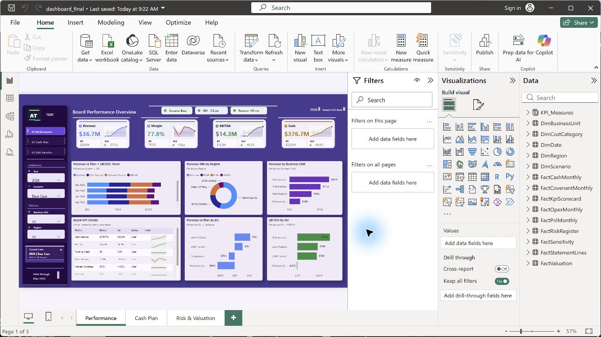

Project 20 v73 Signature QA
Direct PBIX verification: pass
Signature fits without scroll

Power BI Desktop render of the real PBIX. The Signature block shows the full `AT` favicon and `TDAT` wordmark without local scrollbars.